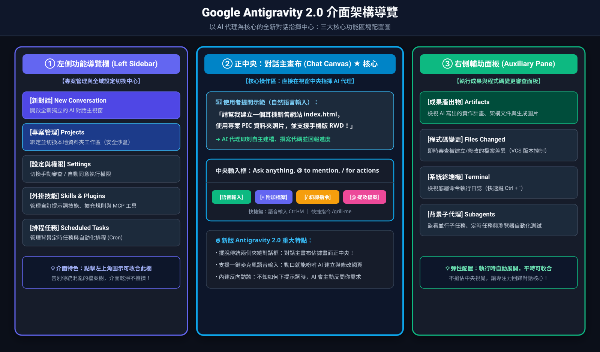
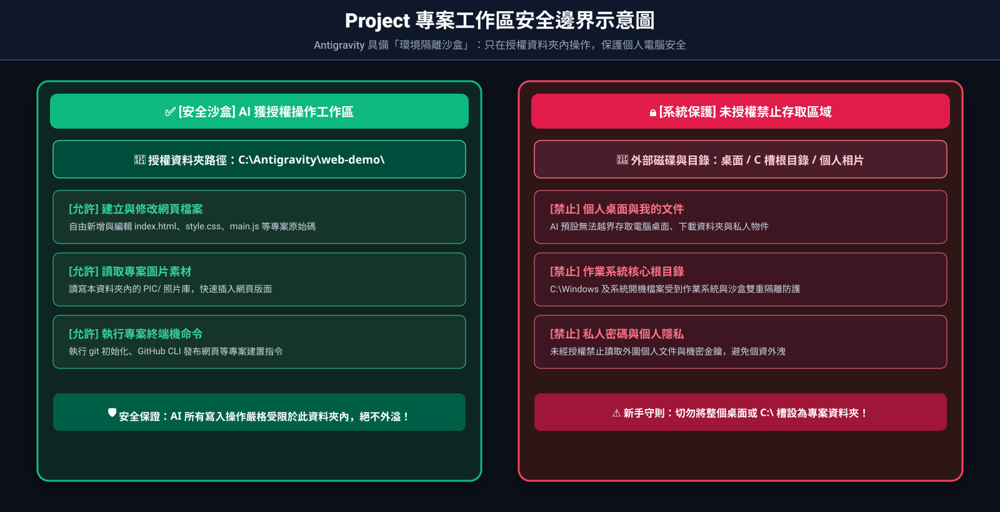
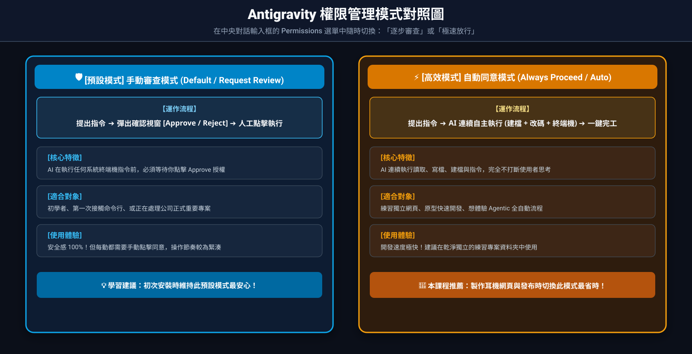

下載及安裝 Antigravity
歡迎來到第一課！本章將帶領完全沒有接觸過 Antigravity 的同學完成軟體下載、安裝、設定工作資料夾，並進行第一次對話。
1-1 什麼是 Antigravity 2.0？
Google Antigravity 2.0 是一款以「Agentic AI（代理型人工智慧）」為核心的獨立桌面應用程式——它就像是你的「AI 代理指揮中心（Agent Command Center）」。傳統的開發工具一打開是密密麻麻的程式碼編輯器，而新版 Antigravity 2.0 則將「AI 對話主畫布（Chat Canvas）」直接放在畫面正中央，配備一位 24 小時在線的資深工程師伴侶。
你不需要預先精通 HTML、CSS 或 JavaScript，只要在正中央的對話框透過「日常說話的自然語言（Prompt）」或直接按麥克風語音說話（Ctrl + M），Antigravity 就能替你直接撰寫程式碼、建立檔案、產生圖片，甚至自動部署網站！
1-2 軟體下載、安裝與新版介面導覽
請依照你目前使用的作業系統，依照以下步驟安裝 Antigravity 2.0：
取得官方安裝程式
前往官方下載頁面（antigravity.google/download），依據你的作業系統下載安裝檔：
- Windows 用戶： 下載
Antigravity-x64.exe安裝檔案（支援 Windows 10/11 64-bit）。 - macOS 用戶： 下載
Antigravity.dmg檔案（支援 Apple Silicon 與 Intel 晶片）。
執行安裝與完成登入
按兩下安裝檔案並依循畫面引導完成安裝。首次啟動 Antigravity 2.0 後，點選「Sign in / 登入」，選擇你個人的 Google 帳號即可進入主畫面。

📁+ New Project 建立專案工作區、開啟新對話（New Conversation）、管理排程任務（Scheduled Tasks）、外掛技能（Skills）與安全權限（Settings）。Ask anything, @ to mention, / for actions）支援打字、+ 附加檔案/資料夾/壓縮檔、🎙️ 語音輸入（Ctrl + M）以及直接切換權限等級（Permissions）。Ctrl + `）。1-3 專案工作區（Projects & Folders）深度解析：單資料夾 vs 多資料夾運作
Antigravity 是一個「具備環境感知能力的代理（Agent）」，它必須明確知道自己被授權在哪個資料夾裡讀寫檔案。在新版 Antigravity 2.0 中，這套安全邊界機制稱為「Project（專案工作區）」！
💡 如何建立你的第一個 Project（專案工作區）？
- 點擊左側導覽欄（Left Sidebar）中帶有加號的資料夾圖示
📁+，選擇 New Project（新增專案）。 - 點擊 Add Folder（新增資料夾），選擇你電腦裡準備專門放這個網站的乾淨空資料夾（例如
C:\Antigravity\web-demo），再按下 Create。 - 回到正中央對話框下方，將執行模式維持在預設的
💻 Local（本機模式）——這代表 AI 會直接在你剛才指定的資料夾內建立與修改網頁檔案！

綁定獨立的專案資料夾後，AI 預設只會在發光的安全邊界內建立與修改網頁；外圍的電腦桌面、C 槽系統與私人照片皆受到隔離保護。
兩種專案資料夾綁定模式：
適合場景： 獨立網站、商品介紹頁或新手練習。
設定方式： 在 New Project ➔ Add Folder 時只加入一個乾淨的專屬資料夾（如 C:\Antigravity\web-demo）。
優點： 結構單純、AI 不會被其他外部檔案干擾，所有的圖片相對路徑（如 PIC/image.jpg）都能直接對應。
適合場景： 前後端分離專案（如同時要改 frontend/ 與 backend/）或需要跨資料夾引用素材庫時。
設定方式： 在 Project 設定中點選 Add Folder 把多個相關資料夾同時加入同一個 Project。
注意事項： AI 會同時擁有這幾個資料夾的完整視野。下指令時建議指明目標資料夾（例如：「請在 frontend 資料夾中建立網頁」）。
1-4 權限管理與自動同意（Permissions）：我們到底授權了什麼？
傳統 AI（如一般聊天機器人）只能「回答文字」，但 Antigravity 具備「行動力（Agency）」 —— 它可以真正幫你寫入檔案、刪除檔案、執行 PowerShell/Bash 終端機指令。因此，理解「我們授予了它什麼權限」是每位學員最重要的安全第一課！
🛡️ Antigravity 的四大核心能力權限
- 讀取檔案（Read Tools）： 檢視專案目錄與讀取檔案內容，用來理解現有專案架構。
- 寫入與修改檔案（Write & Edit Tools）： 在專案資料夾內建立新檔案、替換或覆蓋程式碼區塊。
- 執行系統指令（Terminal / Run Command）： 在終端機執行指令（例如
git status、gh repo create等）。 - 網路與外部整合（Web Search / Browser / MCP）： 查詢最新官方文件、啟動瀏覽器自動化測試（
/browser）或呼叫外掛服務。
如何切換「手動審查（Default）」與「自動同意（Auto-Approve）」？
在新版 Antigravity 2.0 中，你可以直接從中央對話輸入框裡的權限選單（Permissions Picker）或左側的 Settings（設定）中，切換以下兩種主要的授權運作模式：

左方會在每次執行終端機指令前跳出
Approve / Reject 確認視窗；右方則授權 AI 連續自動完成建檔、改碼與部署，大幅提升開發效率。
AI 只能在你的 Project 資料夾內讀寫檔案；每次準備執行系統終端機命令（如 Windows PowerShell 指令）時，畫面會跳出「確認按鈕（Approve / Reject）」，你點擊「Approve」後它才會執行。
適合： 初學者、在重要環境或想逐步觀察 AI 動作時。
將工具執行策略設為自動放行後，AI 會自主連續執行讀取、修復、寫檔與終端機指令跑完一整串工作流，不需要你每一動都手動按「同意」，開發速度極快。
適合： 獨立練習專案、快速原型開發（如本課程製作產品網頁與 GitHub 自動部署）。
- 絕對不要將個人的整顆硬碟根目錄（如
C:\）或「桌面」直接加入 Project 資料夾！請永遠建立一個專門放這個專案的獨立新資料夾。 - 不要在專案資料夾裡放私人密碼檔： 後續第 4 章我們會將整個資料夾發布到公開的網路上（GitHub）。因此請勿將私人帳密筆記、身分證照片放在這個資料夾內。
- 💡 初學者小百科：什麼是
.gitignore（忽略清單）？
如果未來你的專案裡真的有一些「只能在自己電腦用、絕對不能傳上網」的私密金鑰檔案（例如寫著密碼的.env檔），你可以直接對 Antigravity 說：
「請幫我建立一份 .gitignore 忽略清單，把我的私密檔案排除，不要上傳到 GitHub！」
這張.gitignore就像是貼在門口的「請勿搬運清單」，AI 在幫你上傳網站時就會自動跳過這些機密檔案，只讓它們安全留在你的電腦裡！ - 在執行未知系統指令前，如果不確定指令意圖，請隨時在對話中詢問 Antigravity：「這條指令的作用是什麼？會不會影響我的系統？」
1-5 第一次與 AI 助手對話實戰
理解了專案工作區（Project）與權限後，請確認畫面正中央輸入框上方已經選中你的練習專案，接著在正中央的對話主畫布（Chat Canvas）輸入框中貼上（或點擊右側麥克風 🎙️ 唸出）下面這段話：
按下 Enter 發送後，你會看到 Antigravity 自動呼叫寫檔工具，並把完整的 HTML 程式碼寫入你的專案資料夾中（你也可以在右側的 Files Changed 面板看到新增的 hello.html）。接著只要打開資料夾點兩下 hello.html，就能在瀏覽器看到生動的網頁畫面！